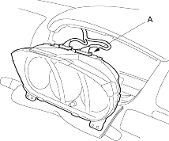
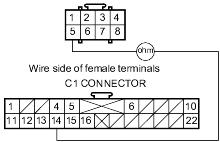
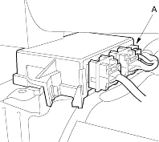
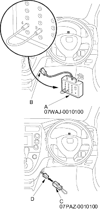

- Disconnect the C1 connector (A) from the gauge assembly.

- Check resistance between the No. 14 terminal of C1 connector and the No. 5 terminal of the U3o connector. There should be 1 ohm or less.
U3o CONNECTOR

Is the resistance as specified?
YES - Faulty SRS indicator light circuit in the gauge assembly or poor contact at the C1 connector; Check the connection. If the connection is OK, replace the gauge assembly. 
NO - Open in the floor wire harness or in dashboard wire harness A; replace the faulty harness.
- Disconnect the floor wire harness 8P connector (A) from the SRS unit.

- Connect the DLC terminal box (A) to the Data Link Connector (DLC) 16P (B). Connect the DLC terminal box terminals No. 4 and No. 9 with a jumper wire, and push the operation switch or connect the SCS short connector (C) to the service check connector (2P) (D).
